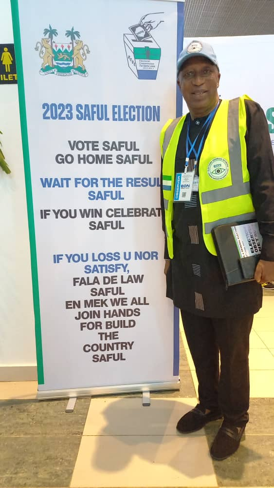

Elections Observer Network Sierra Leone (EON-SL) is an independent, impartial and non-partisan consortium of civil society groups working to promote transparent, inclusive, peaceful and credible electoral processes in Sierra Leone.
EON-SL works to strengthen citizen participation, electoral transparency, accountability and confidence through observation, civic education, research, monitoring and evidence-based recommendations.
Access information about electoral processes, voter participation, election administration, reforms and important developments.
Explore Elections →Understand how EON-SL observes, documents and analyses electoral processes before, during and after elections.
Our Methodology →Explore EON-SL reports, research, policy briefs, findings and recommendations arising from electoral observation.
View Reports →
Established in 2020, Elections Observer Network Sierra Leone is an independent and non-partisan network of civil society actors, faith-based groups, professional bodies, youth and women's organisations committed to observing electoral processes in Sierra Leone.
EON-SL seeks to complement the work of Election Management Bodies while mobilising citizens to participate meaningfully throughout the electoral cycle.
EON-SL's work is supported by leadership, staff, technical personnel, coordinators and other authorised members who contribute to electoral observation, civic participation, research and democratic governance.
EON-SL's work is organised around key areas that contribute to transparent, inclusive and credible democratic processes.
EON-SL's observation work is designed to generate credible evidence that can contribute to improved electoral processes and informed public dialogue.
Monitor electoral activities and processes.
Record observations and relevant evidence.
Assess information objectively and professionally.
Communicate credible findings to stakeholders.
Identify practical opportunities for improvement.

An informed and engaged citizenry is essential to democratic participation. EON-SL promotes voter and civic education to help citizens understand their rights, responsibilities and role in electoral processes.
Civic Education ResourcesCitizens, observers, organisations and partners can contribute to strengthening transparent and credible electoral processes.
Support EON-SL's civic education, observation and community engagement activities.
Volunteer With EON-SL →Learn about opportunities to participate in election observation and monitoring activities.
Observer Registration →Explore opportunities for organisations and institutions to collaborate with EON-SL.
Partnership Information →EON-SL remains committed to observing, documenting and reporting on electoral processes while promoting transparency, accountability, inclusion and peaceful democratic participation.
Contact EON-SL